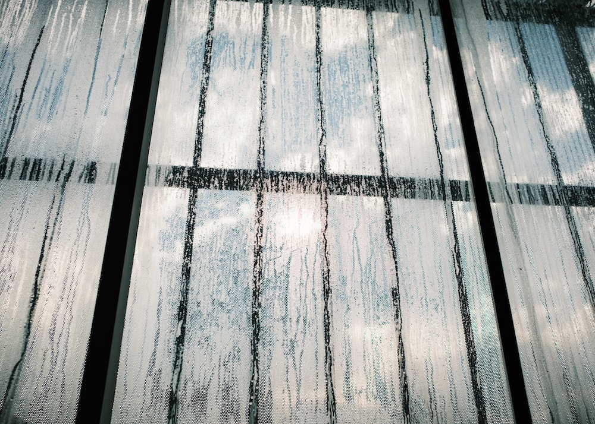
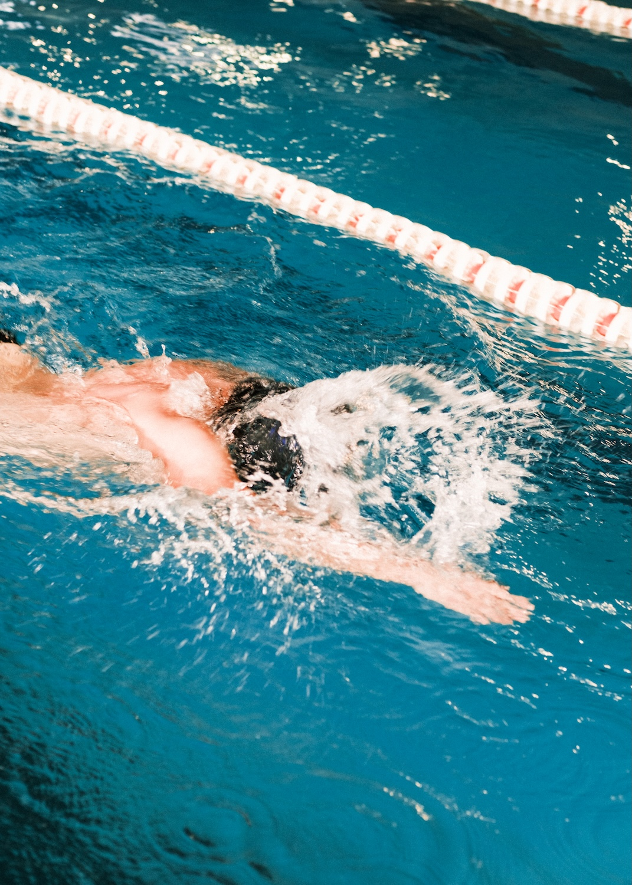
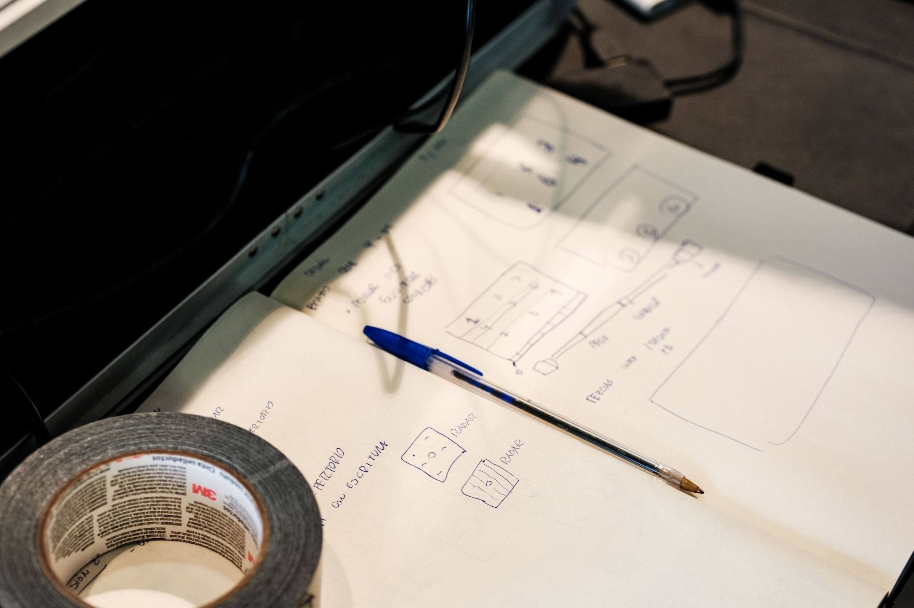
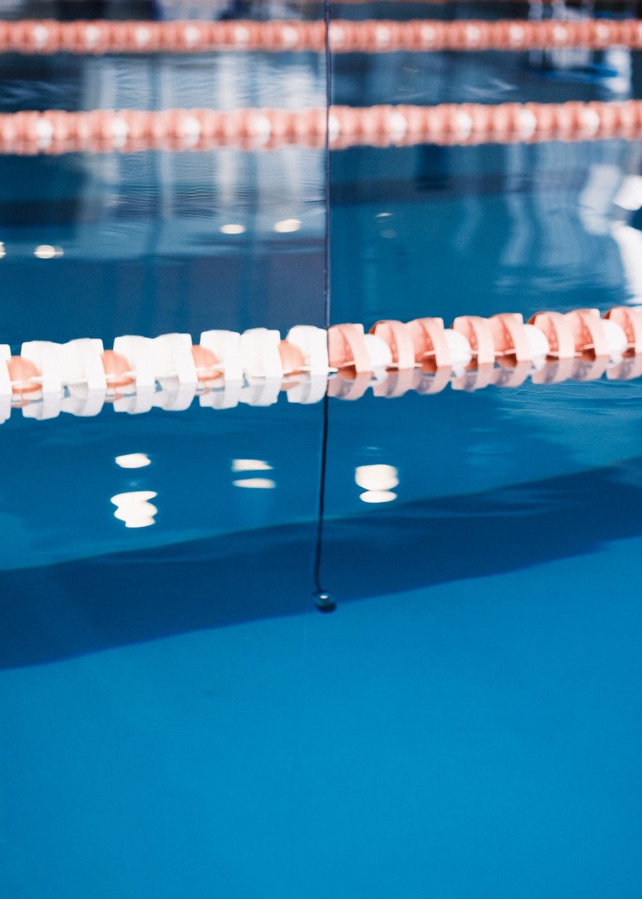
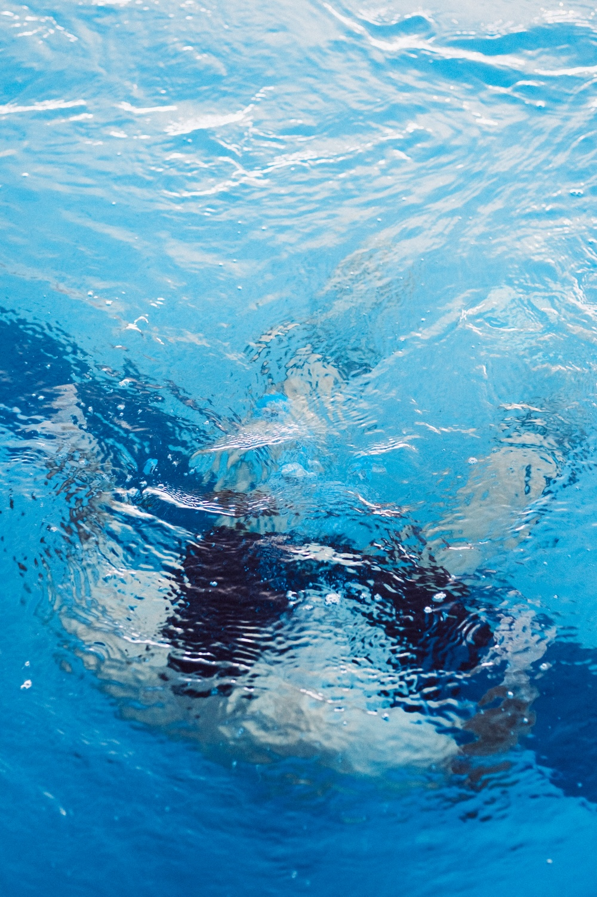
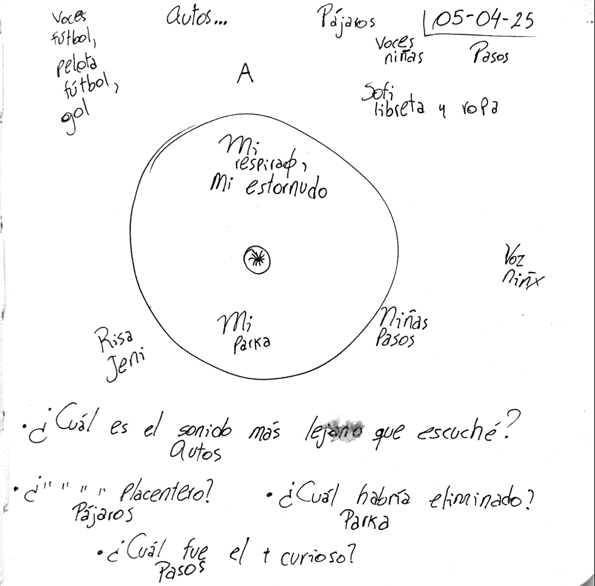
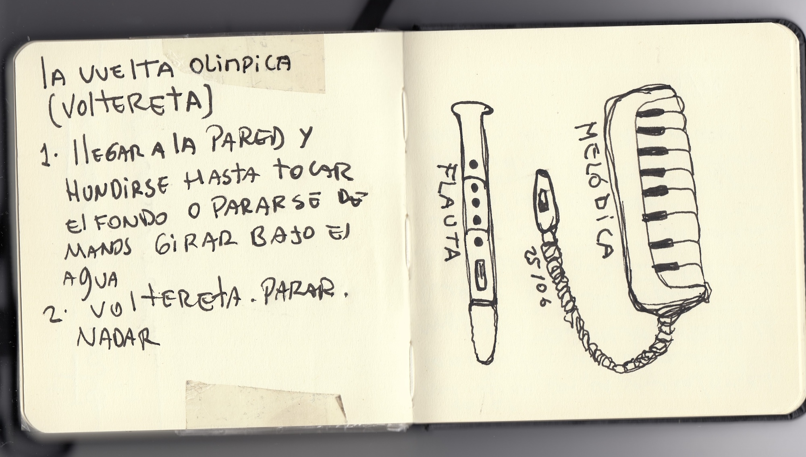
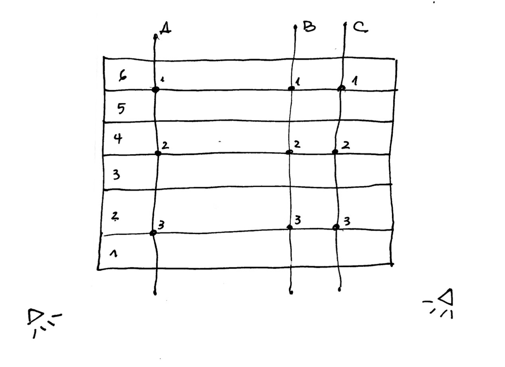
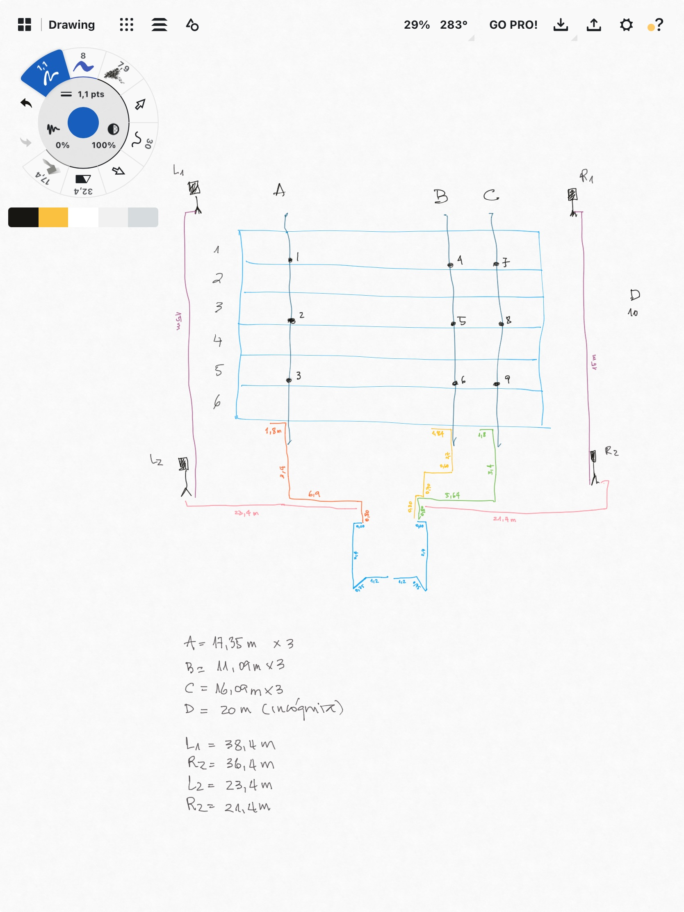
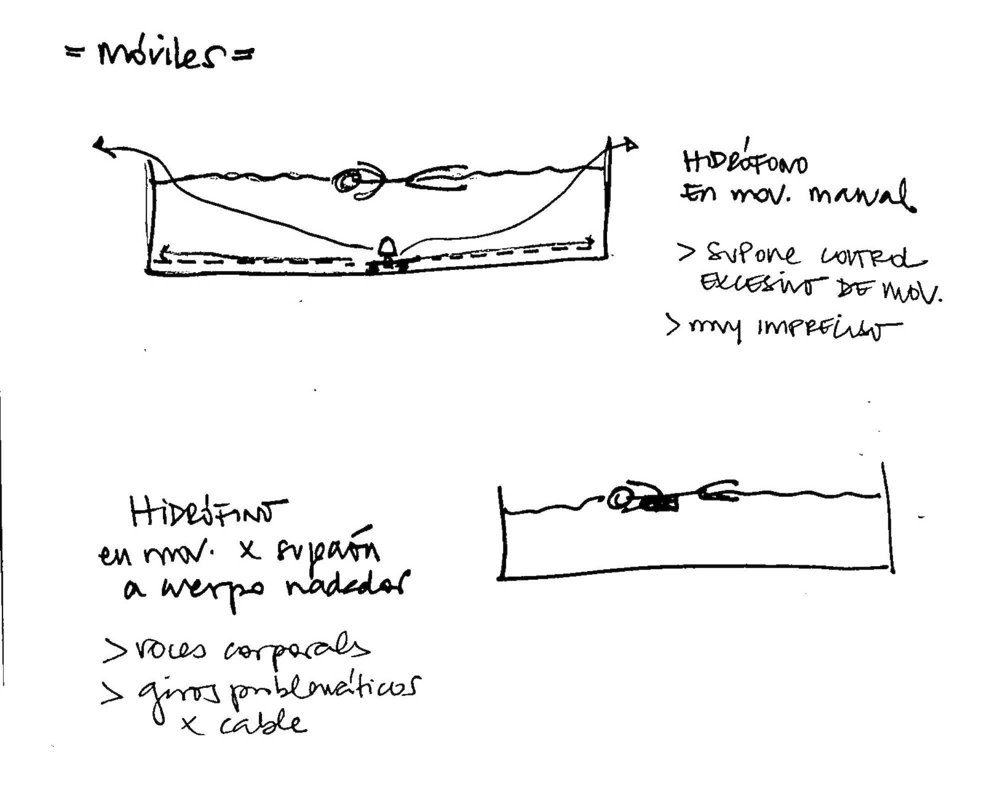

Publicación
Aproximaciones Subacuáticas ≈
El punto de partida de esta publicación son las bitácoras de trabajo de los seis nadadores amateurs que participaron del proceso. En ellas se reúnen ejercicios de escucha, anotaciones, grafías, dibujos y onomatopeyas que intentan mapear la experiencia sonora en el proyecto, el deporte y la vida cotidiana. Más que un registro documental, estas bitácoras funcionan como una caja de herramientas: un espacio donde el sonido se traduce primero en palabra escrita y luego en posibles interpretaciones gráficas.
En las sesiones mensuales presenciales, y en los encargos deportivos y sonoros realizados entre una sesión y otra, nos enfocamos en la escucha profunda y activación de la atención. Así, pedimos registrar sonidos en la vida cotidiana: el primer sonido al despertar, el último antes de dormir y los que rodean su trayecto diario. Exploramos también el modo en que el sonido puede ser percibido, descrito y trasladado a distintas formas de registro y notación.
Las bitácoras operan entonces como un lugar de traducción. En ellas se ensaya el paso desde la escucha hacia la palabra escrita, y desde allí hacia una posible interpretación gráfica. Este tránsito entre sonido, significante y forma visual produce un desplazamiento continuo donde cada registro abre nuevas posibilidades de lectura. Más que fijar el sonido, la escritura lo despliega en múltiples direcciones.
Descargar publicación (próximamente)
Mosaico de bitácoras









